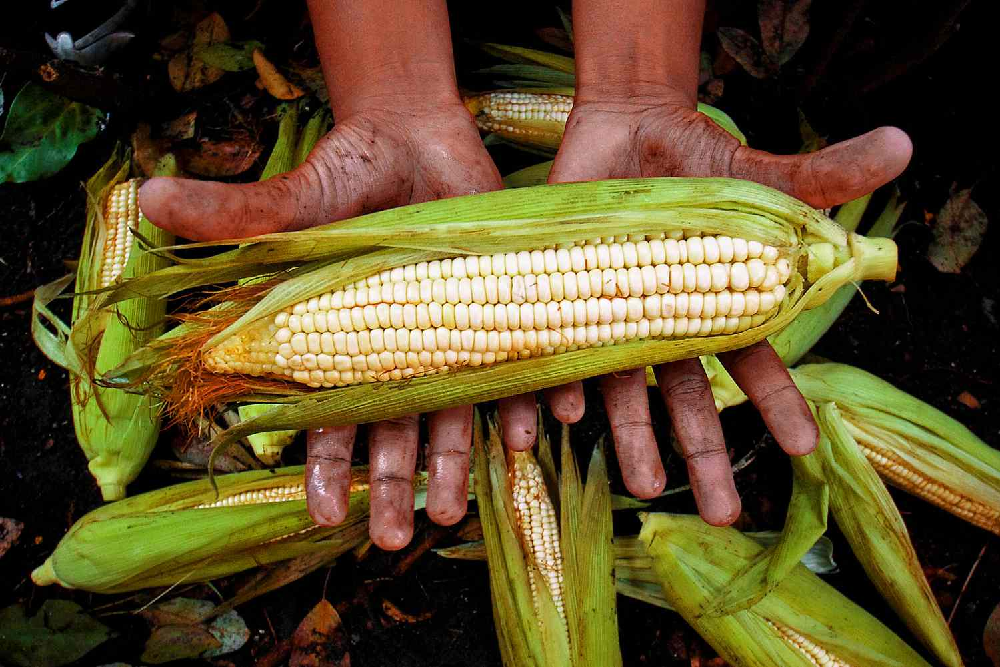

Maize
Best Cassava Planting Practices: The cultivation of cassava always starts with stem cuttings. These cuttings are planting materials obtained from the stem of cassava plants harvested and at least 10 months old. Once the cassava tubers are harvested, the stems are cut off from the tubers, and the leaves are removed. Then the stems are stored in a dry and cool place for the next planting season. It has been observed that stem cuttings below the base of the plants give good starch yields. Cuttings material from the upper stems produced fewer yields [1,2,3]. It is thus recommended that farmers make use of cuttings from the lower part of the stem. A good stem cutting for planting cassava should: Be 20-30 cm long and about 1.5-4.0 cm thick, Have 2 to 3 viable buds [4,5,6] Taking 1/3 of the total length of the stem from the top is considered the best for planting.
Best Fertilizers for Cassava Farms: A basal dose of 15 tonnes of farmyard manure along with a chemical fertilizers of Nitrogen(N:50kg), Phosphorus(P:50kg) and Potash(O:50kg)per hectare should be applied at the time of land preparation. Subsequently, a dose of 50kg "N" and 50kg "P" should be applied along with the first intercultural operations 50-60 days after planting.
Pest management for Cassava: Microbial control is a special form of biological control in which the natural enemies are “microbes” (fungi, bacteria, or viruses) that kill the pests by causing diseases in them. These “microbial control agents” may occur naturally on cassava farms and, like other natural enemies, they do their job without harming the crop or affecting people. Fungi have been found that kill the variegated grasshopper. The fungi are spread as “spores” which are like tiny seeds. The spores land on a pest, germinate, and the fungus then penetrates the body of the pest, growing and killing it within a few days. W hen a diseased grasshopper dies, its dead body may remain firmly gripped to the plant or drop to the ground. “Biopesticides” consisting of fungus spores mixed in oil are being prepared by scientists as commercial products against the grasshopper. The product can be sprayed on weeds such as the Siam weed, Chromolaena odorata, to kill newly hatched nymphs which gather in large numbers on the weed. The product can also be sprayed directly on cassava to kill nymphs and adults of the grasshopper on the plant.
Storage techniques for Cassava: Cut the plant at about 30 –50 cm above the ground; use the stem to lift the roots. Pull the plant gently and do not drag the roots. Dragging can cause bruises and cuts which may lead to early deterioration Cassava roots start deteriorating soon after harvesting. Internal discoloration and loss of marketing value occur if they are not cooked or processed within 24 – 48 hour of harvesting. Secondary fungi and bacteria infection may cause rot in untreated roots